Dataset Overview
This project explores passenger data from the Titanic disaster to understand what factors influenced survival.
The dataset includes information about each passenger such as their age, gender, ticket class, fare, and whether they survived or not.
Dataset Features
PassengerId
Unique identifier for each passenger
Survived
Survival status (1 = survived, 0 = did not survive)
Pclass
Passenger class (1 = First, 2 = Second, 3 = Third)
Sex
Encoded gender (0 = Female, 1 = Male)
Age
Age of passenger in years
SibSp
Number of siblings/spouses aboard
Parch
Number of parents/children aboard
Fare
Ticket fare paid by passenger
Embarked
Encoded boarding port (C, Q, S → numeric in preprocessing)
Project Goal
Discover patterns in survival based on class, gender, age, and other factors, and understand who was more likely to survive.
Setup
import pandas as pd
import sqlite3
df = pd.read_csv("titanic.csv")
conn = sqlite3.connect("titanic.db")
df.to_sql("titanic", conn, if_exists="replace", index=False)SQL Analysis
1. Passenger count by gender
SELECT Sex, COUNT(*)
FROM titanic
GROUP BY Sex;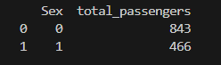
2. Overall survival rate
SELECT ROUND(AVG(Survived)*100,2)
FROM titanic;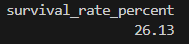
3. Survival by gender
SELECT Sex,
COUNT(*) AS total,
SUM(Survived) AS survived,
ROUND(AVG(Survived)*100,2) AS survival_rate
FROM titanic
GROUP BY Sex;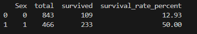
4. Survival by class
SELECT Pclass,
COUNT(*) AS total,
SUM(Survived) AS survived,
ROUND(AVG(Survived)*100,2) AS survival_rate
FROM titanic
GROUP BY Pclass;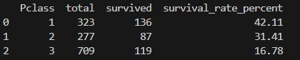
5. Average fare per class
SELECT Pclass,
ROUND(AVG(Fare),2) AS avg_fare
FROM titanic
GROUP BY Pclass;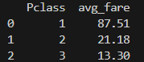
6. Average age (survived vs not)
SELECT Survived,
ROUND(AVG(Age),2) AS avg_age
FROM titanic
GROUP BY Survived;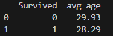
7. Survival by gender & class
SELECT Pclass,
Sex,
COUNT(*) AS total,
SUM(Survived) AS survived,
ROUND(AVG(Survived)*100,2) AS survival_rate
FROM titanic
GROUP BY Pclass, Sex;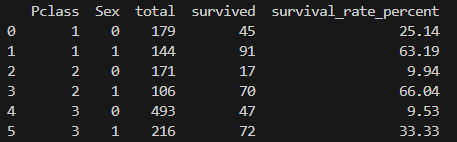
8. Above average fare survivors
SELECT *
FROM titanic
WHERE Fare > (SELECT AVG(Fare) FROM titanic)
AND Survived = 1;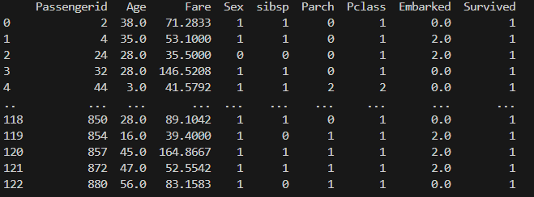
9. Top 5 highest fares
SELECT *
FROM titanic
ORDER BY Fare DESC
LIMIT 5;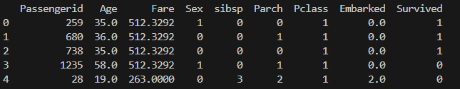
10. Survival by fare range
SELECT
CASE
WHEN Fare < 10 THEN '0-10'
WHEN Fare < 50 THEN '10-50'
WHEN Fare < 100 THEN '50-100'
ELSE '100+'
END AS fare_range,
COUNT(*) AS total,
SUM(Survived) AS survived,
ROUND(AVG(Survived)*100,2) AS survival_rate
FROM titanic
GROUP BY fare_range;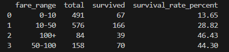
11. Family size effect
SELECT (SibSp + Parch) AS family_size,
COUNT(*) AS total,
SUM(Survived) AS survived,
ROUND(AVG(Survived)*100,2) AS survival_rate
FROM titanic
GROUP BY family_size;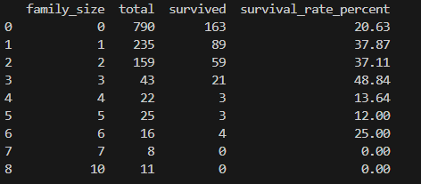
12. Alone vs Family
SELECT
CASE
WHEN (SibSp + Parch) = 0 THEN 'Alone'
ELSE 'Family'
END AS travel_type,
COUNT(*) AS total,
SUM(Survived) AS survived,
ROUND(AVG(Survived)*100,2) AS survival_rate
FROM titanic
GROUP BY travel_type;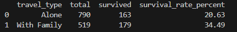
13. Family size buckets
SELECT
CASE
WHEN (SibSp + Parch) = 0 THEN 'Alone'
WHEN (SibSp + Parch) <= 3 THEN 'Small'
ELSE 'Large'
END AS family_bucket,
COUNT(*) AS total,
SUM(Survived) AS survived,
ROUND(AVG(Survived)*100,2) AS survival_rate
FROM titanic
GROUP BY family_bucket;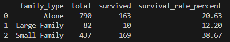
14. Survival by embarkation
SELECT Embarked,
COUNT(*) AS total,
SUM(Survived) AS survived,
ROUND(AVG(Survived)*100,2) AS survival_rate
FROM titanic
GROUP BY Embarked;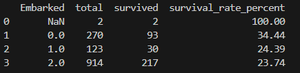
15. High fare survivors by class average
SELECT *
FROM titanic
WHERE Survived = 1
AND Fare > (
SELECT AVG(Fare)
FROM titanic t2
WHERE t2.Pclass = titanic.Pclass
)
LIMIT 10;Dashboard Summary
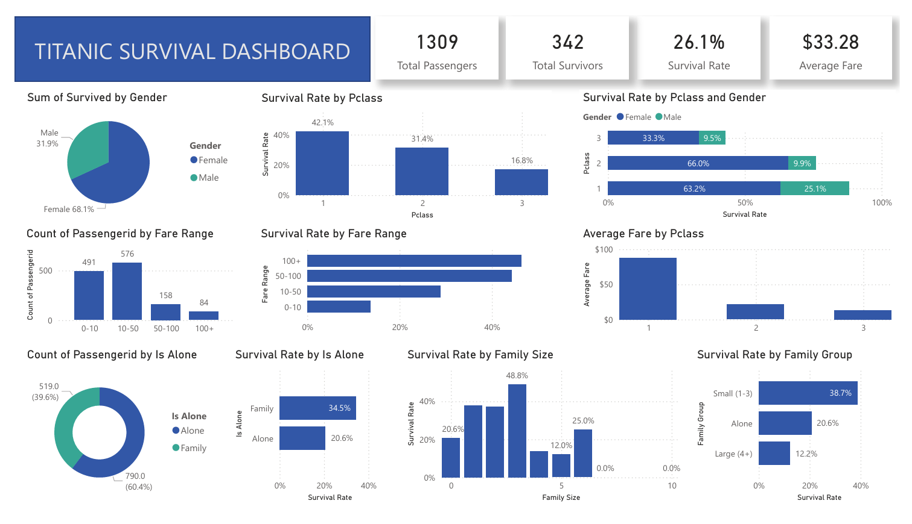
Summary view of survival patterns across gender, class, and fare distribution.
Key Insights
- Women and children had significantly higher survival rates
- First-class passengers were prioritized during evacuation
- Higher fare strongly correlates with survival
- Solo travelers had lower survival probability
- Embarkation location influenced survival rates